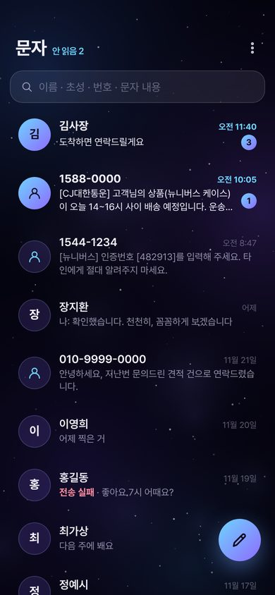
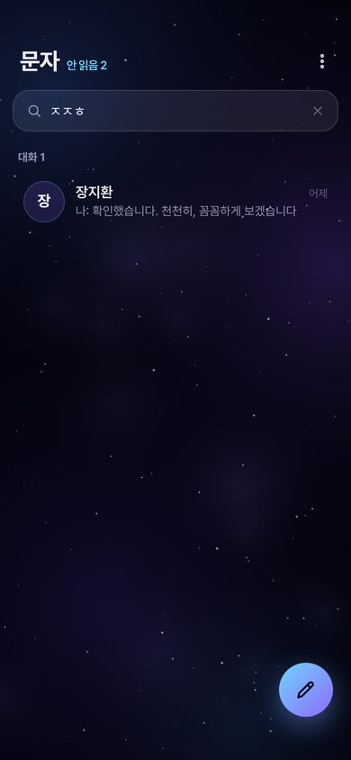

뉴니버스 문자 v1 (시험판)
버전 1-test · 뉴니버스 고정 서명(런처·전화와 같은 서명) · 따로 까는 앱 · 인터넷 권한 없음
내려받기 · 뉴니버스 문자 v1 (약 0.12MB)
들어간 것
- 대화 목록: 사람마다 마지막 문자 한 줄, 안 읽은 문자 수, 주소록 이름으로 표시(이름이 없으면 010-0000-0000 모양 번호). ‘[Web발신]’ 꼬리표는 목록에서 숨겨요.
- 목록 검색: 맨 위 칸에서 이름 · 초성(ㅈㅈㅎ) · 번호 · 문자 내용으로 찾아요.
- 대화 화면: 말풍선, 날짜 구분, 보내기, 긴 글은 ‘2개로 나눠 보내요’ 안내, 길게 누르면 복사, 실패한 문자는 눌러서 다시 보내기, 오른쪽 위 전화 단추.
- 새 문자: 오른쪽 아래 연필 → 받는 사람을 이름 · 초성 · 번호로 찾기 (최근 대화 · 주소록).
- 새 문자 알림 (잠금 화면에는 ‘새 문자’만 보이고 내용은 숨김).
- 예전에 받은 사진 문자는 보기만 돼요.
- 설정은 목록 오른쪽 위 ⋮ 안에 있어요 (아래 탭 없음).
아직 안 되는 것 (다음 판): 사진 · 장문(MMS) 문자를 새로 받기와 보내기. 그래서 v1은 기본 문자 앱으로 지정하지 않고 써 보시길 권해요. 지정하지 않아도 보기 · 보내기 · 새 문자 알림은 돼요(저장은 원래 문자 앱이 해요).
1. 설치하기
- Play 프로텍트 검사 잠시 끄기: Play 스토어 → 프로필 사진 → Play 프로텍트 → 톱니바퀴 → ‘Play 프로텍트로 앱 검사’ 끄기.
- 이 폰의 크롬에서 위 내려받기 → 내 파일 › 다운로드 › newniverse-sms-v1-test.apk → (출처 허용) → 설치.
- 설치가 끝나면 Play 프로텍트 검사를 다시 켜기.
2. 처음 켜기 (권한)
- 앱 목록에서 뉴니버스 문자를 열면 권한 창이 떠요: SMS, 연락처, 알림을 모두 허용.
- SMS 허용 창이 안 뜨거나 ‘제한된 설정’ 창이 뜨면, 직접 설치한 앱이라 안드로이드가 막은 거예요. 앱이 띄우는 안내에서 앱 정보 열기 → 오른쪽 위 ⋮ → 제한된 설정 허용(지문·비밀번호) → 돌아와서 다시 시도.
설정 › 애플리케이션 › 뉴니버스 문자 › ⋮ › 제한된 설정 허용
3. 기본 문자 앱 지정 (v1은 권하지 않아요)
목록 ⋮ › 기본 문자 앱으로 설정. 앱이 한 번 더 알려 준 뒤 시스템 창에서 뉴니버스 문자를 고르면 돼요. ‘액세스가 거부됨’이 뜨면 2번의 ‘제한된 설정 허용’을 먼저 해 주세요.
되돌리기: 설정 › 애플리케이션 › 기본 앱 선택 › SMS 앱 › 메시지. 앱을 지워도 원래 앱으로 돌아가고, 문자는 폰에 그대로 남아요.
화면






화면의 이름과 번호는 모두 예시예요. 문자 내용은 폰 밖으로 나가지 않아요(인터넷 권한 없음).